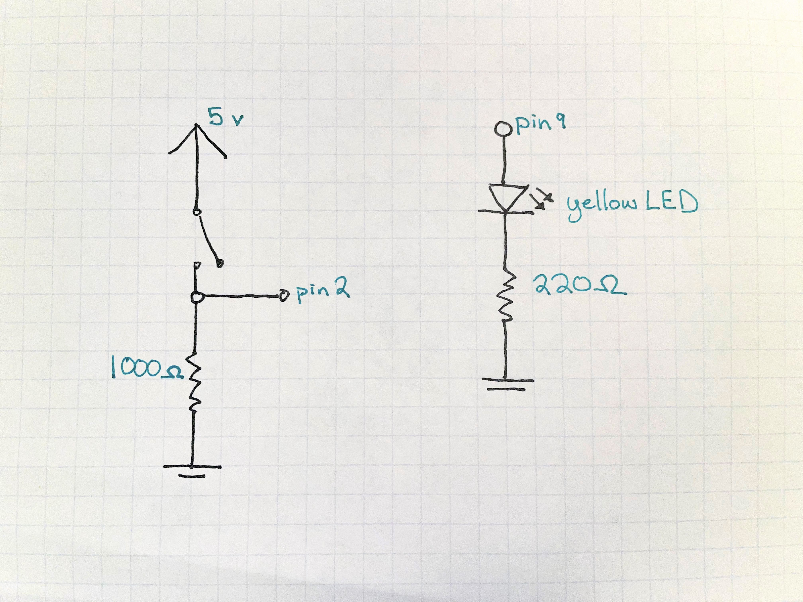
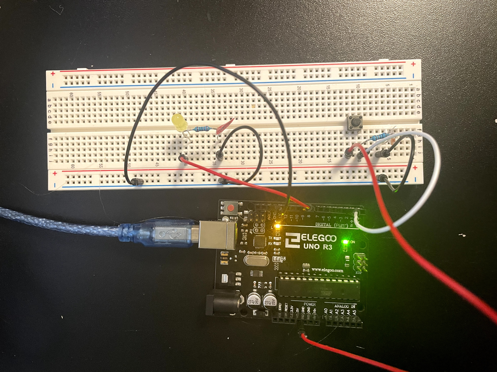

Assignment 2: Fade!
An LED goes through different actions whenever a button is pressed. The actions are: off, on, dim, and fade in and out.
Code used:
Debounce by Davit A. Mellis (2006), last modified by Arturo Guadalupi (2016)
Fading by David A. Mellis (2008), last modified by Tom Igoe (2011)
The Schematics

I have a button connected to power, with a wire to pin 2 to read if it's on or off. The button is also connected to a 1000 ohm resistor, to that current isn't infinite and it doesn't drain too much pover. I also have a yellow LED connected to pin 9. It has a 220 ohm resistor. Here's the math:
Voltage from arduino: 5 volts. LED voltage drop: 1.8 volts. Max current: 30 mA
V=IR
5-1.8 = .03 * R
R = 3.2/0.03 = 106.66 minimum resistor
Therefore, the 220 ohm resistor is best!
I like using the maximum current (30 mA) in my calculations, so I know without a doubt that any larger resistor is safe.
The Wiring
Red connects to power, black to ground, and white is for reading values.
The Code
// constants that won't change. They're used here to set pin numbers:
const int buttonPin = 2; // the number of the pushbutton pin
const int ledPin = 9; // the number of the LED pin
const int actionMax = 3; // how many actions the LED will take
// Variables that will change:
int ledAction = 0; // the current action the LED will be taking
int buttonState; // the current reading from the input pin
int lastButtonState = LOW; // the previous reading from the input pin
// the following variables are unsigned longs because the time, measured in
// milliseconds, will quickly become a bigger number than can be stored in an int.
unsigned long lastDebounceTime = 0; // the last time the output pin was toggled
unsigned long debounceDelay = 50; // the debounce time; increase if the output flickers
void setup() {
pinMode(buttonPin, INPUT);
pinMode(ledPin, OUTPUT);
// set initial LED state to off
digitalWrite(ledPin, LOW);
}
void loop() {
// read the state of the switch into a local variable:
int reading = digitalRead(buttonPin);
// check to see if you just pressed the button
// (i.e. the input went from LOW to HIGH), and you've waited long enough
// since the last press to ignore any noise:
// If the switch changed, due to noise or pressing:
if (reading != lastButtonState) {
// reset the debouncing timer
lastDebounceTime = millis();
}
if ((millis() - lastDebounceTime) > debounceDelay) {
// whatever the reading is at, it's been there for longer than the debounce
// delay, so take it as the actual current state:
// if the button state has changed:
if (reading != buttonState) {
buttonState = reading;
// only change the LED action if the new button state is HIGH
if (buttonState == HIGH) {
ledAction +=1;
}
}
}
//check that the ledAction isn't higher than allowed. if it is, put it back to 0
if (ledAction > actionMax) {
ledAction = 0;
}
// The various actions the LED takes
if (ledAction == 0) { //LED is off
digitalWrite(ledPin, LOW);
} else if (ledAction == 1) { //LED is on
digitalWrite(ledPin, HIGH);
} else if (ledAction == 2) { //LED is dim
analogWrite(ledPin, 100);
} else if (ledAction == 3) { // LED fades in and out
int check = 0; //initialize check, a variable used to exit the forloop if the button is pressed
// fade in from min to max in increments of 5 points, as long as the button hasn't been pressed:
for (int fadeValue = 0 ; fadeValue <= 255 && check == 0; fadeValue += 5) {
analogWrite(ledPin, fadeValue); // sets the value (range from 0 to 255):
check = digitalRead(buttonPin); // check if the button has been pressed
delay(30); // wait for 30 milliseconds to see the dimming effect
}
check = max(check, digitalRead(buttonPin)); // check if the button has been pressed
// fade out from max to min in increments of 5 points, as long as the button hasn't been pressed:
for (int fadeValue = 255 ; fadeValue >= 0 && check ==0; fadeValue -= 5) {
analogWrite(ledPin, fadeValue); // sets the value (range from 0 to 255):
check = max(check, digitalRead(buttonPin)); //Check to see if the buttons been pressed
delay(30); // wait for 30 milliseconds to see the dimming effect
}
}
// save the reading. Next time through the loop, it'll be the lastButtonState:
lastButtonState = reading;
}
The Gif

As I hit the button, the light changes. The order: Off, on, dim, and fading in and out. It then can be pressed to repeat the cycle